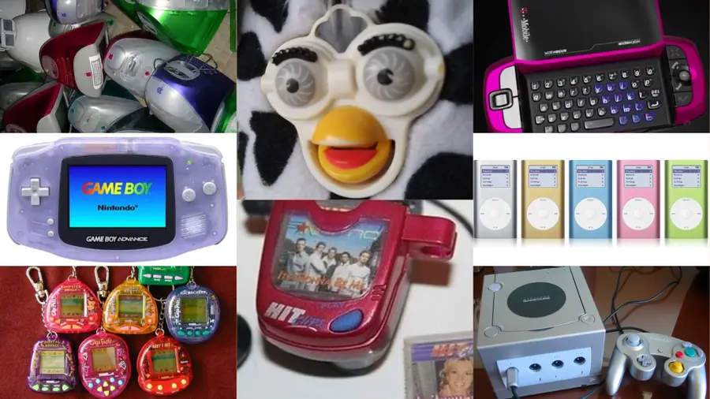
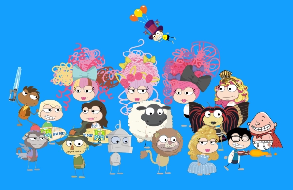
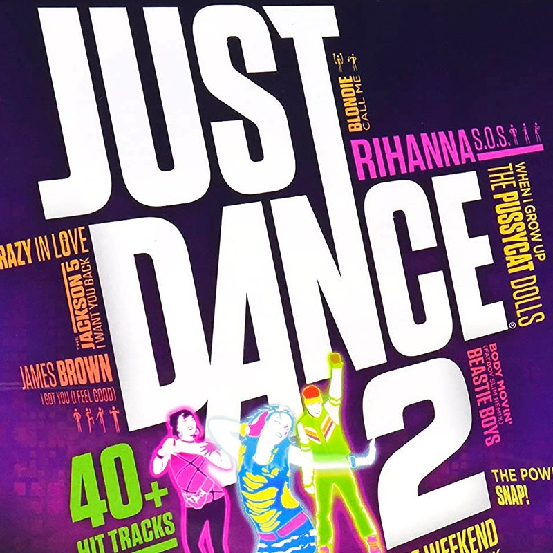
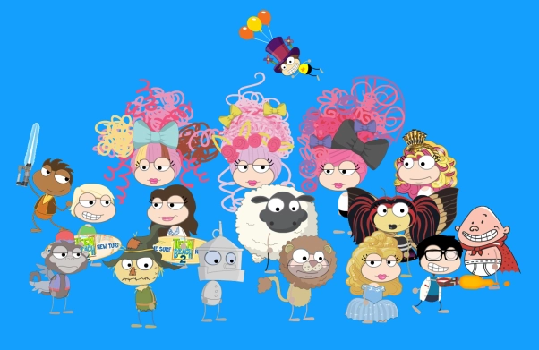
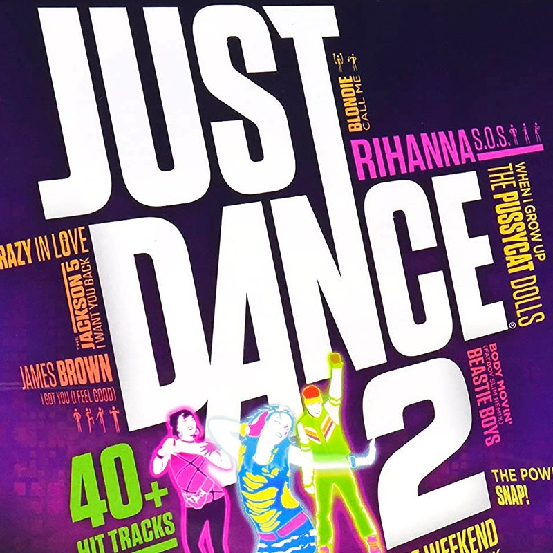

Technology in Y2K
An era of rapid technological development, the 2000s delivered a wide array of changes in animation, gaming, and website design. After all, you are looking at the start of the Internet Age, with the evolution of smartphones, computers, and social media. The 2000s was an amazing decade for technology and forever established broadband as a necessity. There were approximately 21 million broadband users worldwide, and the number continued to increase year over year as new users signed up and dial-up internet users were migrating over to broadband service.
The years 2000-2003 gave us camera phones, USB flash drives, Bluetooth, iPods, the video gaming revolution, LinkedIn, and more. We will talk about a few of these below. Think about old 2000s technology you used to have. If you were a 2000s kid, think about what types of technology existed. The 2000s marked the beginning of the internet and competition between Microsoft and Apple.

The 2000s saw significant shifts in the gaming industry, including the entry of Microsoft into the console market and Sega's exit from hardware. Nintendo's Wii console captured a new audience with its innovative design and motion controls, becoming the best-selling console of its generation. Sony's PlayStation 2 became the best-selling console of all time, with a strong software library that included popular titles like Metal Gear Solid 3 and Grand Theft Auto 3.
If you were a 2000s kid, you might remember Neopets, Gaia Online, or Club Penguin, all of which used Adobes Flash software to run games or world maps. Or maybe you have visited popular websites like Newgrounds, where users shared videos and Flash games — and continue to do so to this day.
 


